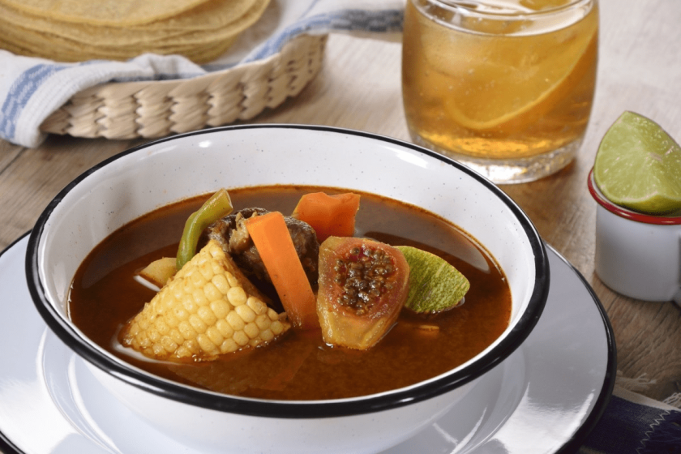

Regresar A la pagina anterior
Mole de olla

Este Mole de olla no puede faltar en tu recetario.
Ingredientes
PARA 4 PERSONAS
1/2 kg Chambarete, en trozos
1/2 kg Retazo de res, en trozos
2 Huesos de tuétano
1/2 Cebolla
1/2 cabezas de ajos
2 Elotes, cortados en cuartos
2 xoconostles, sin piel y sin semillas y cortados en sextos
1 Chayote, pelado y en cubos medianos
200 gr Elotes, en tercios
1 Papa grande, en cubos medianos
1 Calabaza grande, en medias lunas
2 zanhorias, en medias lunas
PARA LA SALSA
1/4 Cebolla
2 dientes Ajos
2 Chiles ancho , desvenados y sin semillas
1 Chile pasilla , desvenado y sin semillas
2 Chiles guajillo , desvenados y sin semillas
3 jitomates , en mitades
3 cucharadas de Aceite
2 ramas de Epazote
PARA LOS CHOCHOYOTES
200 gr Masa de maíz
1 cucharadita de Aceite
1 cucharada de Epazote finamente picado
Sal al gusto
Procedimiento
COLOCA la carne, la cebolla y cubre con agua.
Añade sal y cocina por 30 minutos en una olla de presión a partir de que suelte vapor.
RETIRA la cebolla y los ajos.
Añade los elotes y el xoconostle.
Cocina por 20 minutos.
PARA LA SALSA
CALIENTA aceite en una cacerola y acitrona la cebolla y el ajo.
AÑADE los chiles y cocina sin dejar de mover hasta que se doren.
Agrega el jitomate y cocina por 10 minutos.
VIERTE un poco de agua y sal.
Tapa y cocina por 10 minutos, deja enfriar.
LICÚA y cuela.
Sofríe en una cacerola y reserva.
PARA LOS CHOCHOYOTES
MEZCLA la masa de maíz con el aceite, epazote y sal.
Mezcla y forma bolitas de 2 centímetros.
HAZ un hueco con la yema de tu dedo, como si fuera una cazuelita.
Reserva.
VIERTE la salsa al caldo y mezcla.
AÑADE los chayotes y las papas.
Cocina por 8 minutos.
Agrega los ejotes y zanahorias.
TAPA y cocina por 10 minutos más.
Agrega los chochoyotes y cocina por 10 minutos o hasta que todo esté cocido.